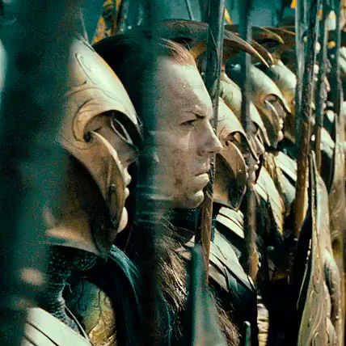
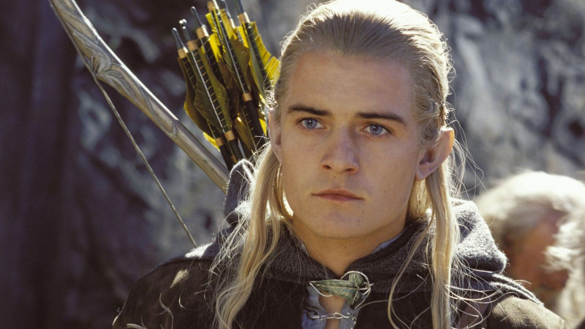
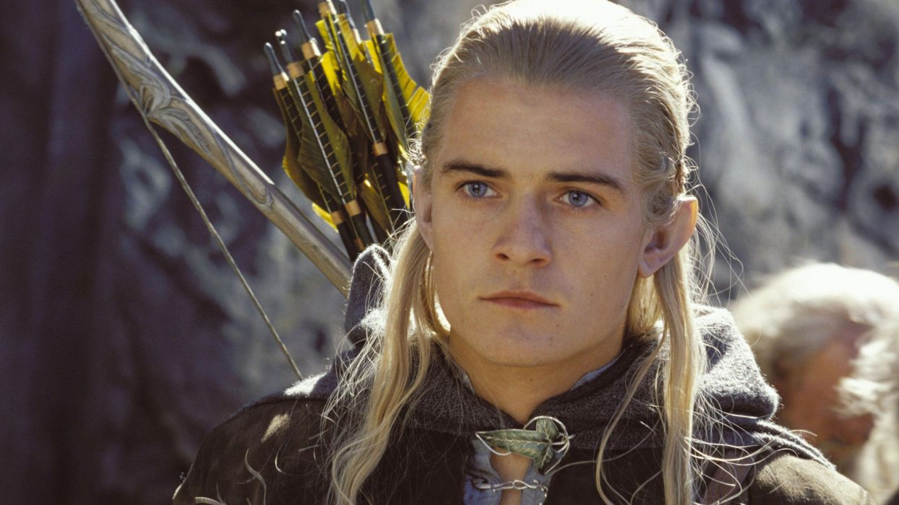

Elfler

 

Elfler ya da İlkdoğanlar, Eru'nun yarattığı iki grup içinde ilk uyandırılan ırk elflerdi. Ay ve güneş gökyüzünde yükseltilmeden önce dünyaya uyanan elfler, ışığa karşı özel bir alâka duyarlar ve özel yetenekleri olan bir rûha sahiptirler. Elfler kendilerine Quendi derler, anlamı "Konuşanlar"dır. Kendilerini böyle adlandırmalarının sebebi, Cuivienen'de uyandıkları dönemde bir süre kendilerinden başka konuşan mahlûka rastlamamalarıdır. Daha sonraki zamanlarda da Elfler dil yeteneği ve müzik konusunda diğer konuşan ırklar olan insanlar, cüceler, orklar ve diğer denklerinden üstündüler. Yakışıklı ve güzel bir görünüme sahip ve düzgün vücutlu bir ırk olan elfler, gururlu ve parlak fikirlidir. Güçlü yapılı, görece uzun boylu ve atik bir tabiatları vardır. Özgür halklar içinde en çok nimete mazhar olmuş ırktır. İnsan ırkının gündüz görmesi gibi, ay ve yıldız ışığında net görebilirler. Aynı zamanda ölümsüz bir ırktır. Onları ancak aşırı kederden kaynaklanan yaşamaya isteksizlik veya katledilmek öldürür. Öldüklerinde Mandos'un Salonlarına giderler. Aynı bedenleriyle reenkarne olabilme seçeneği kendilerine verilmiştir. Bunun sebebi akıbetlerinin insanlarınkinden farklı olarak Arda ile bağlı olmasıdır. Ancak İkinci Çağ'ın sonunda Ölümsüz Diyar, Arda'dan ayrıldığı zaman, elflerin Arda'yla olan bağları sona erdi ve bölük bölük Arda'yı terk etmeye başladılar.
Quendi (bütün elfler), uyandıktan sonra gruplara ayrıldılar. Daha sonra da alt-gruplar ortaya çıktı. İlk bölünme, bir kısmının Orta Dünya'yı terkedip, o sıralar Arda üzerinde olan Valinor'a gitmeye karar vermesi ile ortaya çıktı. Valinor'a gitmek için kendilerine yapılan daveti kabul edenler Eldar olarak isimlendirildi. Daveti reddedenler ise Avari olarak isimlendirildi. Orta Dünya'da kalıp, Valinor'daki İki Ağaç'ın ışığını hiç görmemiş olanlar Moriquendi (Karanlık Elfler) olarak nitelendirildiler. Kara olarak nitelendirilmeleri kötü olmakla ilgili olarak kendilerine verilmiş bir yakıştırma değildi. Sadece, o sıralarda henüz Güneş ve Ay'ın ışığının olmadığı ve sadece yıldız ışığının alacakaranlığının olduğu dönemlerde Orta Dünya'da kalmayı seçtikleri için Kara Elfler olarak isimlendirildiler. Elfler, bütün gruplarıyla birlikte Morgoth tarafından nefret edildiler.
Valinor yolculuğunda, yolculuğu sürüncemeye alan Teleri grubu ana gruptan ayrıldı ve oyalandı. Bunlar içinde, kara elflerle ilişki içine girmeyenler Laiquendi (Yeşil elfler), Sindar (Gri elfler) ve Nandor olarak üç alt gruba ayrıldılar. Valinor yoluna çıkan fakat Orta Dünya’da kalmaya karar veren bu elf gruplarına Úmanyar (İsteksizler) denildi. Valinor’a ulaşan elfler de üç alt gruba ayrıldılar; Vanyar, Noldor ve Teleri. Bu üç grup Calaquendi (Işık elfleri - Yüksek Elfler) olarak bilindiler. Böyle denmesinin sebebi, Valinor’un İki Ağacının ışığını temaşa etmeleriydi. Daha sonra Noldor, Silmarilleri Morgoth’tan geri almak için Orta Dünya’ya döndü. Vanyar ise Valinor’da kaldı.
Yüksek Elfler içinde en önemlileri arasında Finwe, Fëanor ve Fingolfin yer almaktadır.
Karanlık Elfler içinde bilinen bir tanesi Kara Elf Eöl’dü. Aslında Teleri kökenli olan Eöl, hiçbir elfi hazzetmezdi. Karanlık yüz ifadeli ve asık suratlı birisi olan Eöl, Fëanor’dan sonra bütün zamanların en iyi demirci elfiydi. Karanlık Elfler'in en önemlileri arasında Luthien, Thingol ve Cirdan yer almaktadır.